jedediyah.github.io/mma2023
The Ethics of STEM Education
in the Age of AI
Jedediyah Williams, PhD
Nantucket High School
April, 2023
@jedediyah
jedediyah.github.io/mma2023
jedediyah.github.io/mma2023
There is too much to talk about!
|
|
|
|
|
|
- Math-based technologies are ubiquitous, often do not work, and are capable of broad and arbitrary harm.
- To what extent should ethics be incorporated into secondary mathematics education?

|
"Yes, train these young people to get these skills, but integrate into that not only the technical capacity but the critical capacity to question what they're doing and what's happening. To me, it is not true empowerment unless people can have the power to question how these skills are going to be used." |


 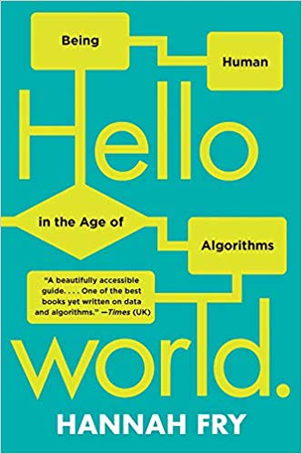
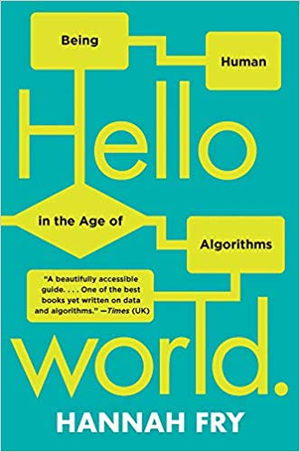


Wait!
Isn't math objective and neutral?
https://twitter.com/standupmaths/status/741251532167974912
"The lack of humility before nature that's being displayed here staggers me." - Malcolm, Jurassic Park


Data modeling applications
- Search engine
- Recommendation systems
- Ranking systems
- Application / resume filtering
- Computer vision
- Chat bots
- Policing
- Sentencing and parole
- "Self-driving" vehicles
- ...
"Our success, happiness, and wellbeing are never fully of our own making. Others' decisions can profoundly affect the course of our lives...
Arbitrary, inconsistent, or faulty decision-making thus raises serious concerns..."
- Fairness and Machine Learning, Barocas, Hardt, and Narayanan
↓
Some of the more well known harms
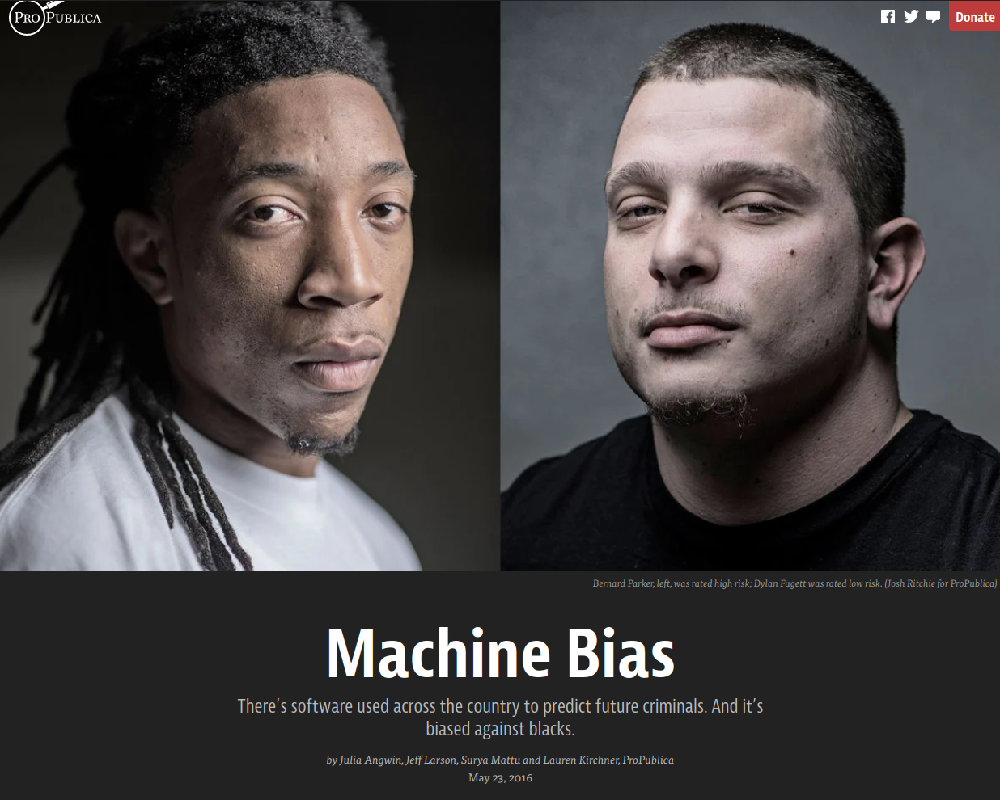 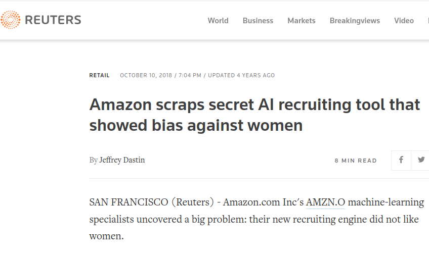
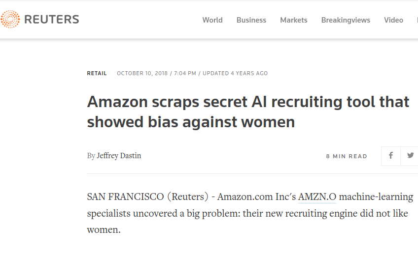

https://www.nytimes.com/2019/08/16/technology/ai-humans.html


 Anatomy of an AI system, Crawford and Joler
Anatomy of an AI system, Crawford and Joler


- Sun-ha Hong, Prediction as Extraction of Discretion
Big Picture
When handing over the tools of mathematics,
we are responsible as educators
for teaching their responsible use.
It is a sin of omission when we fail to acknowledge the consequences of the content we teach; Consequences which include ethical and technical pitfalls.
Subtle picture
- There is no simple solution. There is no checklist that if you've done these things then you won't cause harm.
- Many ethical concerns are technical concerns.
- Predicting, detecting, and mitigating harm and discrimination in data technologies are complex and active areas of research.
1. Get the data |
2. Clean up the data |
3. Explore the data |
4. Model it |
5. Share the results |
Data |
1. Get the data |
Preprocess |
2. Clean up the data |
Explore |
3. Explore the data |
Model |
4. Model it |
Communicate |
5. Share the results |
Data Modeling Process
Data
→
Preprocess
→
Explore
→
Model
→
Communicate
Data Modeling Process
Environment
→
Data
→
Preprocess
→
Explore
→
Model
→
Communicate
→
A framework for critical analysis
|
Data
|
• Harmful data collection, lack of consent, insecure / lack of privacy, historical, representational, or measurement bias, ...
|
|
Preprocess
|
• Labor exploitation, labeling by non-experts, incorrect labeling, trauma experienced by labelers, ...
|
|
Explore
|
• Feature selection bias, bias in interpretation of data visualization, data manipulation, feature hacking, ...
|
|
Model
|
• Bias in model choice, model-amplified bias, environmental impact, learning bias, evaluation bias, peripheral modeling, ...
|
|
Communicate
|
• Biased model interpretation, ignoring variance, rejecting model, deploying harmful products, deployment bias, ...
|
|
Meta
|
• "Pernicious feedback loops", runaway homogeneity, susceptability to adversarial attack, lack of oversight or auditing, ...
|

Critical Questions:
|
|
How high does a bouncy ball bounce?
Data
Preprocess
Explore
Model
Communicate
How high does a bouncy ball bounce?
|
Data
|
• Data problem: What will be the bounce height \(h_{bounce}\) of my bouncy ball when dropped from rest from a given drop height \(h_{drop}\)?
• Record several slow-motion videos. |
|
Preprocess
|
• Randomly choose a subset of videos as the training set.
• Parse the training set videos into a table. |
|
Explore
|
• Create a scatter plot of \(h_{bounce}(h_{drop})\)
• Look for features! Notice and wonder. Consider models. |
|
Model
|
• Find a best-fit model on the training data.
• Validate the model on the testing data. |
|
Communicate
|
• Reflect on the process.
• Share out. |

Bounce Prediction Error
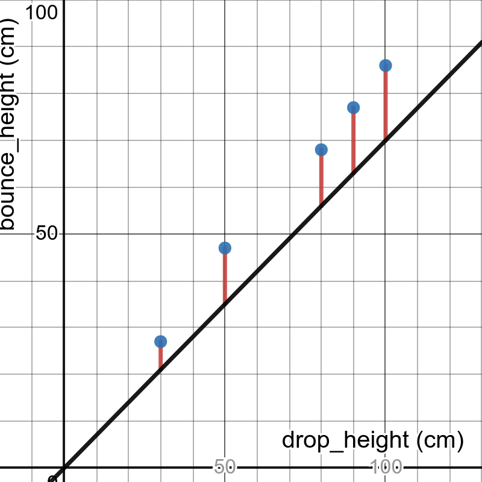 
Bounce Prediction Error
 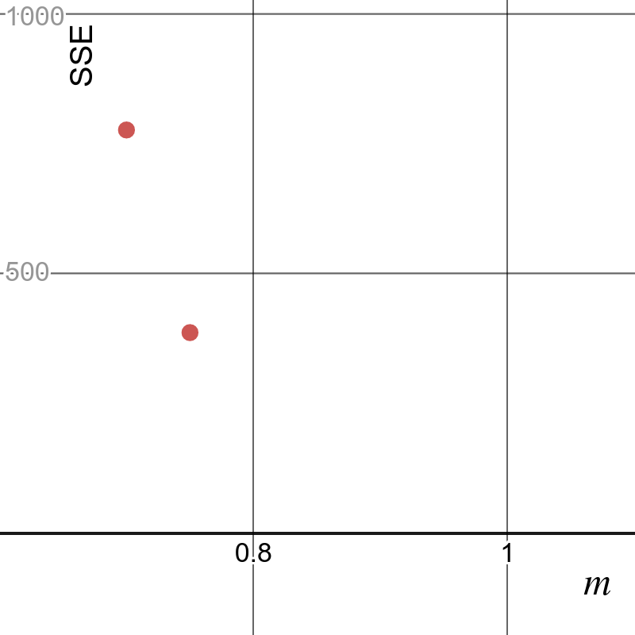
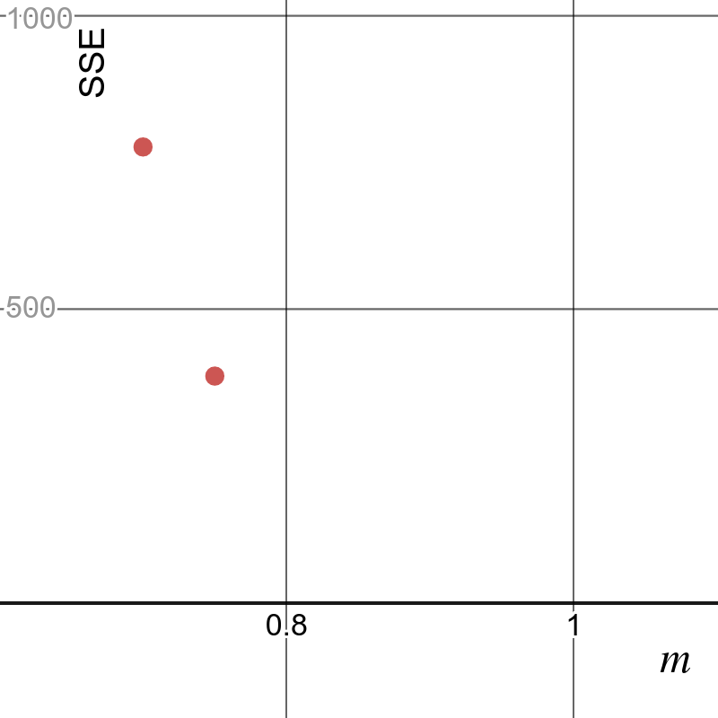
Bounce Prediction Error


Bounce Prediction Error


Bounce Prediction Error
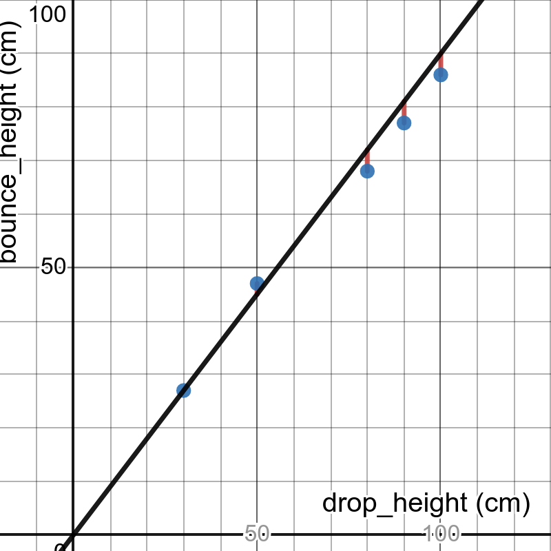 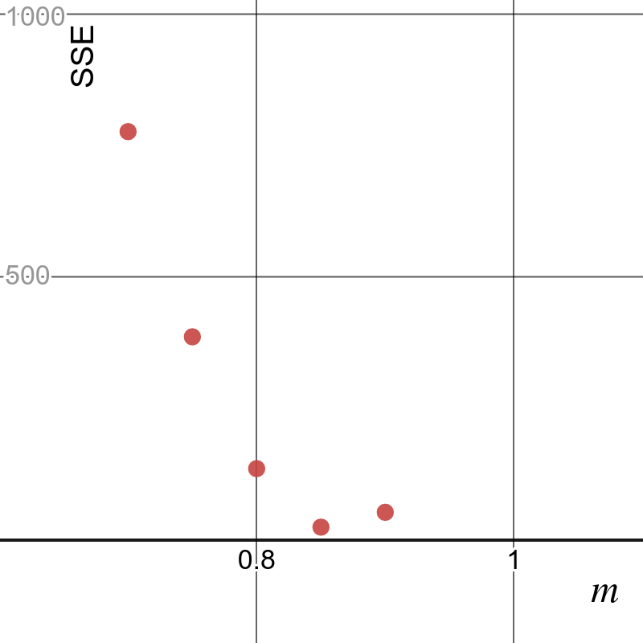
Bounce Prediction Error
 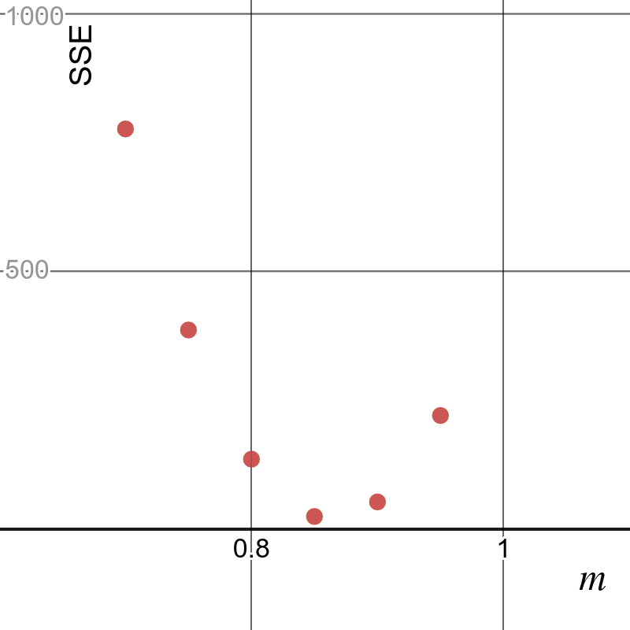
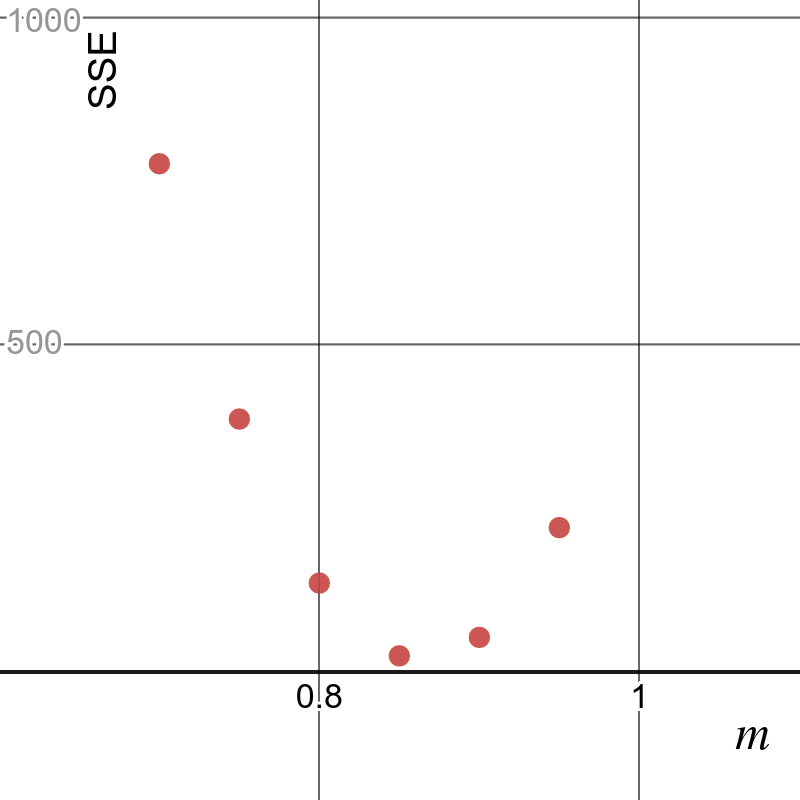
Bounce Prediction Error


 |
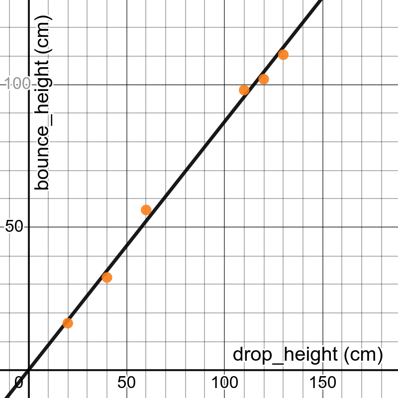 |
| Training Data | Testing Data |

"How high does a bouncy ball bounce?"
"How high does a bouncy ball bounce?"
becomes:
"How much can we minimize the error of a linear model when predicting how high this particular bouncy ball will bounce in this room on this surface at this temperature and humidity when dropped from rest at a height of no more than two meters?"
Conclusions
- Mathematics leads to important ethical considerations.
- We should help students avoid becoming evil.
Resources
- AI Now Institute reports: https://ainowinstitute.org/reports.html
- Lighthouse3 - AI Ethics Weekly
- Rachel Thomas Fast.ai Data Ethics Course
- Ethics in Mathematics Readings
- Automating Ambiguity: Challenges and Pitfalls of Artificial Intelligence - Abeba Birhane
- On the dangers of stochastic parrots: Can language models be too big? - Emily M. Bender, Timnit Gebru, Angelina McMillan-Major, and Margaret Mitchell
- Rachael Tatman - YouTube
- AIES '22: Proceedings of the 2022 AAAI/ACM Conference on AI, Ethics, and Society https://dl.acm.org/doi/proceedings/10.1145/3514094
- Teaching Machine Learning in the Context of Critical Quantitative Information Literacy
- Integrating data science ethics into an undergraduate major: A case study
- A call for a humanistic stance toward k-12 data science education
- Artificial intelligence in education: Addressing ethical challenges in K-12 settings
- Provisional Data Science for Social Change Spring 2022 schedule